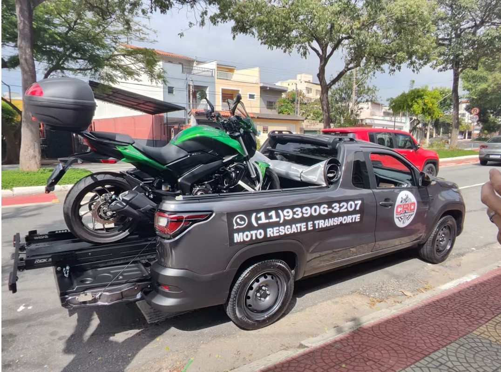
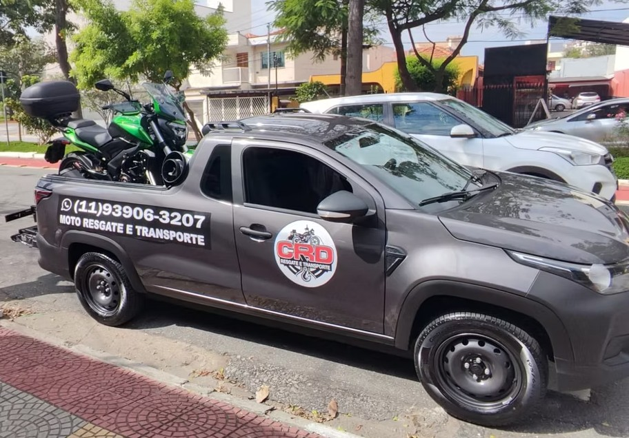
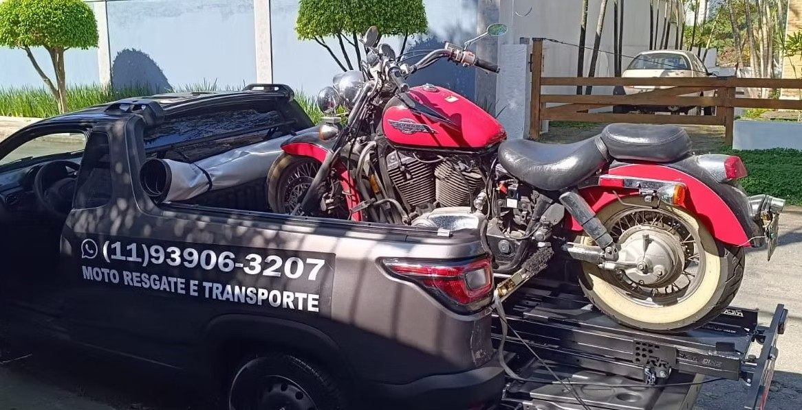
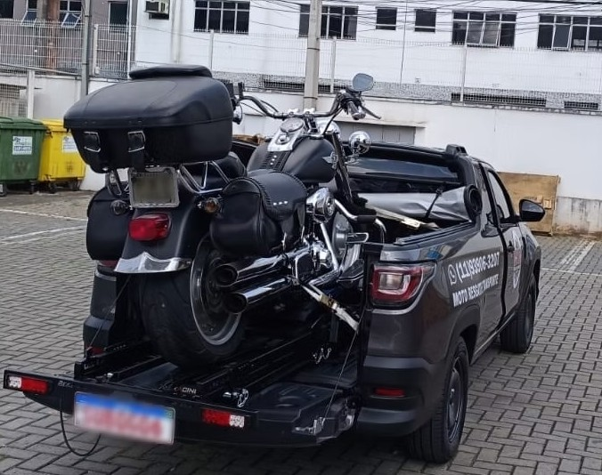

24h
Disponibilidade
Atendimento todos os dias, a qualquer hora.
Resgate e transporte especializado de motocicletas
Imprevisto no passeio? A CRD transporta sua moto com segurança, 24h. Peça seu orçamento grátis pelo WhatsApp.
Atendimento 24 horas em São Paulo, Grande São Paulo e regiões próximas. Consulte a disponibilidade para o seu trajeto.
Solicite seu orçamentoEMPRESA REGULAMENTADA JUNTO À ANTT

Por que chamar a CRD
Atendimento especializado para ajudar você a resolver o imprevisto com cuidado e clareza.
Atendimento todos os dias, a qualquer hora.
Orçamento apresentado antes da execução do serviço.
Uma motocicleta por operação.
Orçamento gratuito pelo WhatsApp
Envie a localização, o destino e os dados da motocicleta para receber uma avaliação do transporte.
Para agilizar o atendimento, tenha estas informações:
Orçamento gratuito e sem compromisso. A quilometragem entre retirada e destino é a principal referência do cálculo; dia, horário e condições da operação também podem influenciar.
Transporte dedicado, com acomodação e fixação da moto durante o trajeto.
Você recebe o orçamento e decide se deseja confirmar o atendimento.
Informe o local, receba o orçamento e confirme o atendimento pelo WhatsApp.
A CRD recebe pedidos a qualquer hora. A execução depende de disponibilidade e trajeto.
Diferencial de transporte
A operação utiliza equipamentos Rick Racing como parte da estrutura de transporte, para acomodar e manter a motocicleta fixada durante o deslocamento.
Do primeiro contato à entrega
Você sabe o que acontece em cada etapa antes de confirmar o atendimento.
Envie pelo WhatsApp onde sua motocicleta está e para onde precisa levá-la.
A equipe avalia a distância e as condições do transporte e informa o valor antes da execução.
Após sua confirmação, a equipe combina os detalhes do resgate e informa a previsão de chegada conforme a disponibilidade.
Nossa operação
Conheça um pouco do trabalho da CRD no transporte especializado de motocicletas.




Experiências de clientes
Relato de quem já utilizou nosso serviço de resgate e transporte.
Gostei muito do atendimento da CRD! Minha moto apresentou um problema durante o passeio e precisei de um guincho urgente. Fui muito bem atendido, o Cláudio foi atencioso, chegou dentro do prazo combinado e transportou minha moto com todo cuidado. O preço foi justo e fiquei muito satisfeito com o serviço. Recomendo a CRD Moto Resgate!
Dúvidas frequentes
Sim. A CRD recebe solicitações de resgate e transporte de motocicletas 24 horas.
A CRD trabalha exclusivamente com motocicletas.
O valor é calculado principalmente conforme a quilometragem. Dia, horário e duração operacional também podem influenciar.
Não. A CRD não realiza manutenção nem reparos mecânicos. O serviço principal é resgate e transporte de motocicletas.
São Paulo capital, Grande São Paulo e regiões próximas. A disponibilidade para cada trajeto deve ser confirmada com a equipe.
O horário estimado é informado após a equipe consultar a disponibilidade, o ponto de retirada, o destino e as condições do trajeto. Por isso, não prometemos um prazo fixo antes dessa avaliação. Envie sua localização pelo WhatsApp para consultar a previsão.
Conte com a CRD Moto Resgate
Solicite seu orçamento gratuito pelo WhatsApp. Informe a localização e o destino para consultar o atendimento.
Solicite seu orçamento